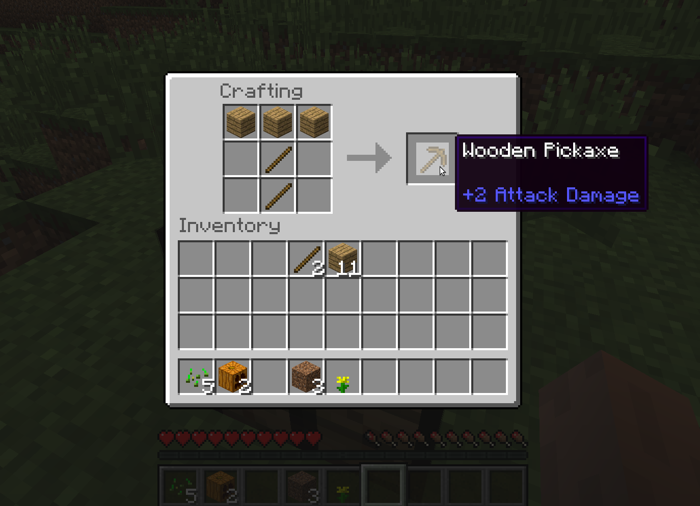

MineCraft
Minecraft, küplerle çeşitli tasarımlar yapmanızı sağlayan 2 ve 3 boyutlu oynanabilen bir oyundur.

Minecraft’ı anlatmaya ilk olarak Wikipedia’dan aldığım şu tanımla başlayabiliriz :).
Minecraft, küplerle çeşitli tasarımlar yapmanızı sağlayan 2 ve 3 boyutlu oynanabilen bir oyundur. Programın ilk sürümleri Markus “Notch” Persson tarafından yazılmıştır ve Notch’un kurduğu Mojang şirketi çatısı altında geliştirilmektedir. Java programlama dilinde yazılmıştır. Oyun; Dwarf Fortress, RollerCoaster Tycoon, Dungeon Keeper ve Infiniminer oyunlarından ilham alınarak geliştirilmiştir. Minecraft, 16 Mayıs 2009’da halka açık sürümden önce toplam 1 haftada yazılmış ve TIGSource forumlarında yayınlanmıştır.
Minecraft basit grafikleri olmasına rağmen çok eğlenceli bir oyundur. Oyunun türkçe dil desteğide bulunmaktadır. Minecraft’da hayatta kalma ve inşaa olmak üzere iki adet oyun modu bulunmakta. Anlatımıma genel olarak Minecraft değil de bu modlar üzerinden gitmeyi daha uygun buldum.
Bu modda rastgele oluşan haritada, herhangi bir yerde doğarak oyuna başlıyorsunuz. Adı üstünde amacımız hayattta kalmak. Hemen bir ağaç kesiyor onları işledikten sonra silah , kürek , kazma gibi çeşitli araç gereçler üretiyorsunuz. Üretmek deyince oyunun şahsım adına en eğlenceli yönü bu.

İnek , tavuk vs hayvanları keserek etlerini topluyoruz ve karnımızı doyuruyoruz veya tarlamıza buğday ekip bu buğdaylardan ekmek yapıyoruz. Kazdığımız taşlardan ocak yapıp etleri pişirdiğimizde karnımız daha çok doyuyor :). Karanlık çökünce yavaş yavaş canavarlar ortaya çıkıyor . İlk gece için kendimize ufak bi barınak yapmamız, kömür ve çubuk ile yaptığımız meşalelerle barınağımızı ışıklandırmamız çok önemli. Karanlık olan heryerde, bu evimiz bile olsa, canavarlar doğabiliyor.

Resimde göründüğü gibi içeride yatağım var. Odun ve koyunlardan topladığım yünle yaptım :). Yatakta sadece geceleri uyuyabiliyorsunuz ve uyuduğunuz zaman direk sabah oluyor . Güneşi gören zombiler ölüyor. Gündüz çalışmamız bizim için daha güvenli. Yatakta bir kere uyuduğumuz zaman orası bizim öldüğümüzde tekrar doğuş noktamız (spawn point) oluyor. Aksi halde öldüğünüzde oyunun başlangıcında ilk doğduğunuz yerde doğuyorsunuz :).

Gelelim oyunun adı olan minecraftlara. Taş kazmamızı ürettikten sonra yerin altına doğru kazmaya başlıyoruz. Kömür , demir , altın , elmas vs çeşitli madenler buluyoruz. Bu madenleri işledikten sonra ray ve vagon üretiyoruz . Bunlar sayesinde daha hızlı yolculuk yapıp , madenlerimiz daha rahat taşıyoruz.

İnşaa modunda oyunda bulunan her hammade veya üründen elimizde sınırsız sayıda bulunuyor. Ölümsüz oluyor ve istediğinizde hava uçabiliyorsunuz. Yani inşaa yapmamız için ortam ve kaynaklar hazır olarak bize sunuluyor. Bizde var olan veya hayalimizdeki bir yapıyı oyuna döküyoruz.

Bu resmi internetten buldum. Gördüğünüz gibi koca bir camii inşaa etmiş. Gayet mükemmel bir çalışma olmuş ve emek verilmiş :). Siz de internetten araştırabilir, örnekler bulabilirsiniz. Diğer modu daha çok sevsem de insanların bu moda olan ilgilerini de anlıyorum. Üç beş arkadaş birleşip, bir yapı seçip, beraberce inşaaya başlıyorlar. İnşaa yarışmaları oluyor, onlara katılıyorlar. Siz de kendi dünyanızda bir mimar, inşaat mühendisi olabilirsiniz :).
Modlardan çıkıp biraz da oyunun yapısından bahsedecek olursak ; Arkadaşlarınızla yerel(local) ağ veya internet üzerinden(online) birlikte oynayabiliyorsunuz. Sıkıldığım zamanlarda hanımla Minecraft’a girip gelecekte sahip olmak istediğimiz evi inşaa ediyoruz mesela :D.
Hoş güzel anlattık ama bu oyunu nereden indirir nasıl çalıştırırız bunlardan hiç bahsetmedik. Oyunu https://minecraft.net/ kendi sitesinden indirebilirsiniz , üye olduktan sonra oyunu 100 dk kadar demo oynabiliyorsunuz. Sınırsız tek seferlik 19.95 € ödemeniz gerekiyor. Oyunu çalıştırmak için indirdiğimiz jar dosyasını sağ tıklayıp terminalden open veya oracle JDK ile aç dememiz yeterli veya uçbirimden “java -jar minecraft.jar” diyerek de çalıştırabiliriz.
Oyun ücretliymiş satın almak istemiyorum ücretsizi yokmu diyen arkadaşlar için de; Ubuntu depolarında bulunan ücretsiz olarak oynanabilen minetest’i tavsiye ediyorum.
Buradan
https://apps.ubuntu.com/cat/applications/precise/minetest/ \
veya uçbirimde
sudo apt-get install minetest
yazarak yükleyebilirsiniz.
Minetest’e ait bir görüntü :

Herkese iyi eğlenceler , bol elmaslı madenler :)
Oyunda bir çok kez hayatta kalmayı başaramayarak edindiğim tecrübelerim :).
İlk Gece ;
İlk gün biraz odun ve kömür(meşale yapmak için) , biraz yiyecek bulduktan sonra koyun aramaya başlayın. Bulduğunuz zaman 3 odun altta 3 yün üstte olacak şekilde işleme masasına dizin ve yatak yapın. Bulamazsanız da sağlık olsun :) , kendinize bir barınak yapın ve meşelaler eşliğinde ilk geceyi atlatın.(Gece olduğu zaman yerin altına doğru maden aramaya başlayabilirsiniz )
Karnımızı doyurmak için bir kaç yöntem var ;
Ya Evimizi Kaybedersek ?
Evimizi kaybettiğimizde bulmak için üç yöntem var ; birincisi harita, ikincisi kordinatlar, üçünsü ve en ilkel olanı da bir kule. Harita yapımı uzun ve zahmetli bir iş olduğu için kendim kullanmıyorum ve es geçiyorum. Koordinatlara gelince, oyundayken F3 tuşuna bastığımız zaman koordinatlar ekranda görünür. X doğu-batı yönü, Z kuzey-güney yönü ve Y ise derinliği yani oyunda kaçıncı katta olduğunuzu gösterir. Evinizde iken bu değerleri bir kağıda not alırsanız kaybolduğunuzda o kordinatlara doğru giderek evinizi rahatlıkla bulabilirsiniz. Kule yöntemizmide ise evimizin yakınına yüksek bir kule inşaa ettikten sonra tepesini bir kaç meşale ile ışıklandırıp , kaybolduğunuzda o kuleyi pusula olarak kullanabilirsiniz lakin bu yöntem evinizden çok uzaklaştığınızda kule görünmeyeceği için işe yaramayabilir.
Daha Kolay Elmas Madeni Bulabilmek için ;
Bildiğiniz üzere oyunun en değerli madeni elmas. Buna bağlı olarak da bulması en zor olan maden. Fakat bi kaç yöntem uygulayarak elmaslara daha kolay ulaşabilirsiniz. Oyundayken F3 tuşuna bastığımız zaman koordinatların ekranda çıktığını ve Y değerinin derinlik yani bulunduğumuz katı gösterdiğini söylemiştik. Nedeni tam bilmemekle beraber elmas madeni en çok 8-14 katları arasında çıkıyor. Koordinat sisteminde Y değerimiz 9. katı gösterene kadar aşağıya doğru kazacağız. Sonra bulunduğumuz kat dahil olmak üzere 3 kat ileri-geri, sağa-sola oda madenciliği yaparak elmasları daha kolay bulabiliriz.